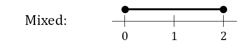

Random Variables¶
What is a Random Variable¶
Suppose we flip a coin twice, the sample space \(S = \{HH, HT, TH, TT\}\) is the set of all possible outcomes.
We can define a function \(X\) on the sample space that takes \(s \in S\) and returns the number of heads in \(s\).

A sort of confusing example is tomorrow’s temperature is a random variable. The set of possible temperatures measures in degrees farenheit is the sample space \(S\). Our random variable is a function that sends a temperature in degrees farenheit to the real number that represents the temperature.

Again, \(X\) is a function on the sample space that maps to the real numbers. It is just a very simple function , \(y=x\).
Students can get confused about random variables because often the random variable is very simple, like \(y=x\). The student then begins to overgeneralize and confuse random variables with sample spaces.
def X1(coinFlips: str) -> int:
"""
This function takes a string of coin flips and returns the number of heads.
"""
heads = 0
for flip in coinFlips:
if flip == "H":
heads += 1
return heads
# Or we can do it in one line
X2 = lambda coinFlips: sum(flip == "H" for flip in coinFlips)
print("Version 1: ", X1("HHHTTH"))
print("Version 2: ", X2("HHHTTH"))
Version 1: 4
Version 2: 4
Probability distribution functions (PDFs)¶
Probability of an outcome¶
We can calculate the probability of a random variable \(X\) taking a particular value.
Flipping a coin twice gives \(S=\{HH,HT,TH,TT\}\). Let \(s \in S\), and \(X\) is the random variable for the number of heads. \(X(s) = 1\) when \(s \in \{HT,TH\}\). To calculate the probability of \(X(s) = 1\):
Even though \(X\) is a function we usually don’t write it as such. Instead of saying \(X(s)=1\) we usually just write \(X=1\) and it is understood that \(X\) is a function. In our previous example we could rewrite it as \(P(X=1)=P(\{HT,TH\})=\frac{1}{2}\).
Probability Mass Function Definition¶
It is common to calculate the probability of a random variable being a value \(x\), \(P(X=x)\). It is so common that we call it a “probability mass function” (abbreviated PMF) and give it special notation.
The probability mass function calculates \(P(X=x)\). There is a special way to write this, instead of using a capital \(P\) we use a lowercase \(p\) and say that:
Some properties of the probability mass function are that the probability of an outcome is between 0 and 1, and that the sum of the probability of all possible outcomes is 1:
For \(x \in S\)
\(0 \leq p(x) \leq 1\)
\(\sum p(x)=1\)
The probability mass function for the count of heads in two coin flips is:
x |
0 |
1 |
2 |
|---|---|---|---|
p(x) |
.25 |
.5 |
.25 |
Cumulative Distribution Functions (CDFs)¶
Again we are flipping the coin twice and counting the heads. We can calculate \(P(X \leq 1) = p(0)+p(1) = .25+.5=.75\). Calculations of this sort are very common, and we call them cumulative distribution functions (CDFs). There is a special notation for this.
The cumulative distribution function calculates \(P(X \leq x)\). There is a special way to write this:
We can calculate the cumulative distribution function by summing the probability mass function:
We calculate the cumulative distribution function for our coin flipping example, see that the CDF is the cumulative sum of the PDF.
x |
0 |
1 |
2 |
|---|---|---|---|
p(x) |
.25 |
.5 |
.25 |
F(x) |
.25 |
.75 |
1 |
In the above table we only define the CDF at points \(0,1,2\) but we can also calculate the CDF at \(.5\).
The CDF only changes at values where there are outcomes that happen with some probability. Understand why the graph below looks the way it does.
Discrete vs. Continuous Random Variables¶
So far we have only talked about flipping coins. When I flip a coin twice the only possible numbers for the heads are \(\{0,1,2\}\). This is an example of a discrete random variable. Discrete means that only certain numbers are possible. Plotting the possible outcomes on a number line yields a series of points.

Some random variables are continuous. This means that the outcomes are intervals instead of points. The height of a person is continuous, they could be 5.983732… feet tall. Any number is possible.

Some random variables are continuous and discrete mixed together. If my speakers volume knob must be between \(0\) and \(2\) then often my speakers will often be turned to exactly \(0\) (no sound) or \(2\) (max sound). If the volume knob is somewhere between \(0\) and \(2\) it could be turned to any number, like 1.5543…, so the volume knob is a mixture of discrete and continuous.

Mixed distributions in depth¶
In the volume knob example the possible outcomes come from the interval \([0,2]\). What about it exactly is mixed? In the CDF there is a jump at \(0\) because \(P(X \leq -.01)=0\) but \(P(X \leq 0) = P(\text{The volume is 0})\)

Discrete distributions don’t increase smoothly over an interval, but continuous distributions do. If we randomly draw a number from the interval \([0,1]\) The CDF smoothly increases from \(0\) to \(1\).

The CDF jumps at a point \(x\) when \(P(X=x)\) is nonzero, consider our volume knob or coin flipping examples. A randomly selected number from \([0,1]\) is exactly \(.5\) with probability \(0\), so the continuous random variable has no jumps (but does have an upward slope). There are infinitely many numbers in \([0,1]\) and \(.5\) is only one of these infinitely many numbers. From our formula for equally likely outcomes:
Continuous distributions use calculus to calculate the CDF, discussed in a later chapter.